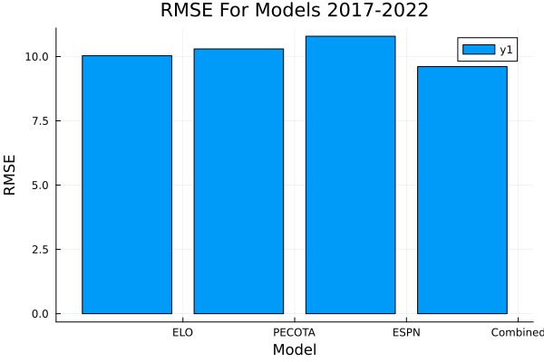
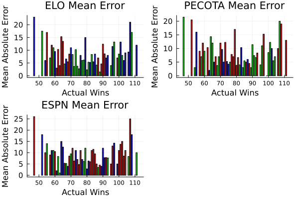

Before the beginning of the MLB season, predictions are made for each team about their performance in the upcoming season. Specifically, predictions are made about the number of wins that the team will have. These predictions come from complex models that take into account the team's player's individual statistics from previous seasons and the projections from aging curves. Some of the models that are most paid attention to are ELO (from fivethirtyeight), PECOTA (from Baseball Prospectus), and from ESPN (being the model that has the most visibility to the public). The purpose of this project is to analyze these projections, to see how they compare, to see what they are individually effective at, and to use these current models to create a new model.
The data for this project is from the past five years of full seasons (excluding the COVID shortened 2020 season). This data can be seen in the dataset below, with each team, how many games they won, and how many games they were predicted to win from each model.
using CSV, DataFrames
el = CSV.read("/Users/jackmerchen/Data/Projected _Wins.csv", DataFrame)
this_year = filter(row -> row.Actual > 2022, el)
elo = filter(row -> row.Actual < 2023, el)
show(elo)150×5 DataFrame
Row │ Team Actual ELO PECOTA ESPN
│ String15 Int64 Int64 Int64 Int64
─────┼────────────────────────────────────────────
1 │ Yankees 99 92 99 94
2 │ Red Sox 78 86 86 87
3 │ Orioles 83 62 61 58
4 │ Tigers 66 73 67 74
5 │ Guardians 92 78 76 77
6 │ White Sox 81 91 95 93
7 │ Royals 65 73 69 71
8 │ Twins 78 83 86 81
9 │ Rangers 68 72 70 69
10 │ Astros 106 92 90 95
11 │ Mariners 90 80 83 82
⋮ │ ⋮ ⋮ ⋮ ⋮ ⋮
141 │ Cardinals 83 81 78 85
142 │ Reds 68 72 74 73
143 │ Pirates 75 81 81 83
144 │ Mets 70 87 89 85
145 │ Phillies 66 70 73 67
146 │ Braves 72 74 76 68
147 │ Blue Jays 76 84 81 87
148 │ Marlins 77 80 77 75
149 │ Nationals 97 92 88 89
150 │ Rays 80 81 84 82
129 rows omittedThe metric for measuring the model was chosen to be RMSE. RMSE was chosen as it is in the same units as both the prediction and what the team actually won. Looking at each models RMSE, we see that each of the models are fairly similar with each of them having an RMSE between 10 and 11.
using MLJBase
function rmse(y_pred::AbstractArray, y_true::AbstractArray)
sqrt(sum((y_pred .- y_true).^2) / length(y_pred))
end
elo_rmse = rmse(elo.ELO, elo.Actual)10.033610184441756pec_rmse = rmse(elo.PECOTA, elo.Actual)10.297248823512684espn_rmse = rmse(elo.ESPN, elo.Actual)10.789501069712784As with training any model, the first step includes preparing the data. This consists of splitting the data into a training set and a testing set and making sure the data is in the correct format for the model to train on. To train the new model, a split of 80-20 is being used, with 80% of the data being used to train the model and 20% of the data being used for testing. Twenty percent of the data represents 30 team projections, or a full MLB seaon (there are 30 teams in the MLB).
new = DataFrames.select(elo, Not("Team"))
function splitdf(df, pct)
@assert 0 <= pct <= 1
ids = collect(axes(df, 1))
shuffle!(ids)
per = ids .<= nrow(df) .* pct
test = view(df, per, :)
train = view(df, .!per, :)
return test, train
end
train, test = splitdf(new, .8)(120×4 SubDataFrame
Row │ Actual ELO PECOTA ESPN
│ Int64 Int64 Int64 Int64
─────┼──────────────────────────────
1 │ 99 92 99 94
2 │ 83 62 61 58
3 │ 66 73 67 74
4 │ 92 78 76 77
5 │ 65 73 69 71
6 │ 78 83 86 81
7 │ 68 72 70 69
8 │ 106 92 90 95
9 │ 60 69 71 68
10 │ 73 84 88 82
11 │ 81 84 78 85
⋮ │ ⋮ ⋮ ⋮ ⋮
111 │ 87 75 76 82
112 │ 86 74 78 74
113 │ 83 81 78 85
114 │ 68 72 74 73
115 │ 75 81 81 83
116 │ 70 87 89 85
117 │ 66 70 73 67
118 │ 72 74 76 68
119 │ 97 92 88 89
120 │ 80 81 84 82
99 rows omitted, 30×4 SubDataFrame
Row │ Actual ELO PECOTA ESPN
│ Int64 Int64 Int64 Int64
─────┼──────────────────────────────
1 │ 78 86 86 87
2 │ 81 91 95 93
3 │ 90 80 83 82
4 │ 111 99 98 101
5 │ 86 91 93 94
6 │ 93 81 81 81
7 │ 101 84 89 87
8 │ 92 92 91 96
9 │ 86 87 85 86
10 │ 92 80 80 79
11 │ 60 70 67 73
⋮ │ ⋮ ⋮ ⋮ ⋮
21 │ 91 99 96 94
22 │ 62 70 72 68
23 │ 103 97 99 95
24 │ 97 76 76 76
25 │ 80 81 79 85
26 │ 82 93 88 89
27 │ 85 74 78 78
28 │ 92 98 93 98
29 │ 76 84 81 87
30 │ 77 80 77 75
9 rows omitted)train_lab = train[:, :Actual]
test_lab = test[:, :Actual]
train_dat = DataFrames.select(train, Not("Actual"))
test_dat = DataFrames.select(test, Not("Actual"))
train_df = Matrix(Float64.(train_dat))
test_df = Matrix(Float64.(test_dat))30×3 Matrix{Float64}:
86.0 86.0 87.0
91.0 95.0 93.0
80.0 83.0 82.0
99.0 98.0 101.0
91.0 93.0 94.0
81.0 81.0 81.0
84.0 89.0 87.0
92.0 91.0 96.0
87.0 85.0 86.0
80.0 80.0 79.0
70.0 67.0 73.0
81.0 79.0 77.0
84.0 85.0 80.0
⋮
84.0 84.0 93.0
85.0 89.0 85.0
99.0 96.0 94.0
70.0 72.0 68.0
97.0 99.0 95.0
76.0 76.0 76.0
81.0 79.0 85.0
93.0 88.0 89.0
74.0 78.0 78.0
98.0 93.0 98.0
84.0 81.0 87.0
80.0 77.0 75.0After the data is prepared, it can be fit to a model with the training data, both the training features (the projections) and the training label (the actual amount of wins). The model that we will be using is a Lasso model. A Lasso model uses L1 regularization for variable selection and to avoid overfitting. The L1 regularization term adds a penalty to the loss function proportional to the absolute value of the coefficients, driving some of the coefficients to zero. This leads to sparse models that include the most important features. Fitting the model can be seen below, along with using each of the models created to make predictions.
using Lasso
model = Lasso.fit(LassoPath, train_df, train_lab)LassoPath (71) solutions for 4 predictors in 2360 iterations):
──────────────────────────────────
λ pct_dev ncoefs
──────────────────────────────────
[1] 9.98656 0.0 0
[2] 9.09938 0.0839809 1
[3] 8.29102 0.153703 1
[4] 7.55447 0.211588 1
[5] 6.88335 0.259645 1
[6] 6.27185 0.299543 1
[7] 5.71468 0.332666 1
[8] 5.207 0.360166 1
[9] 4.74442 0.382997 1
[10] 4.32294 0.401952 1
[11] 3.9389 0.417688 1
[12] 3.58898 0.430753 1
[13] 3.27015 0.4416 1
[14] 2.97964 0.450605 1
[15] 2.71493 0.458081 1
[16] 2.47375 0.464288 1
[17] 2.25399 0.469441 1
[18] 2.05375 0.473719 1
[19] 1.8713 0.47727 1
[20] 1.70506 0.480219 1
[21] 1.55359 0.482667 1
[22] 1.41557 0.4847 1
[23] 1.28981 0.486417 2
[24] 1.17523 0.487855 2
[25] 1.07083 0.489049 2
[26] 0.975697 0.49004 2
[27] 0.889019 0.490863 2
[28] 0.810041 0.491546 2
[29] 0.738079 0.492114 2
[30] 0.67251 0.492585 2
[31] 0.612766 0.492975 2
[32] 0.55833 0.4933 2
[33] 0.508729 0.493569 2
[34] 0.463535 0.493793 2
[35] 0.422356 0.493979 2
[36] 0.384835 0.494133 2
[37] 0.350647 0.494261 2
[38] 0.319497 0.494367 2
[39] 0.291114 0.494456 2
[40] 0.265252 0.494529 2
[41] 0.241688 0.49459 2
[42] 0.220217 0.49464 2
[43] 0.200653 0.494682 2
[44] 0.182828 0.494717 2
[45] 0.166586 0.495571 3
[46] 0.151787 0.496474 3
[47] 0.138303 0.497224 3
[48] 0.126016 0.497847 3
[49] 0.114821 0.498365 3
[50] 0.104621 0.498794 3
[51] 0.0953266 0.49915 3
[52] 0.086858 0.499447 3
[53] 0.0791418 0.499692 3
[54] 0.072111 0.499898 3
[55] 0.0657049 0.500067 3
[56] 0.0598679 0.500208 3
[57] 0.0545494 0.500323 3
[58] 0.0497033 0.500421 3
[59] 0.0452878 0.500501 3
[60] 0.0412646 0.500568 3
[61] 0.0375988 0.500624 3
[62] 0.0342586 0.50067 3
[63] 0.0312151 0.500708 3
[64] 0.0284421 0.50074 3
[65] 0.0259154 0.500767 3
[66] 0.0236131 0.500788 3
[67] 0.0215154 0.500807 3
[68] 0.019604 0.500822 3
[69] 0.0178625 0.500834 3
[70] 0.0162756 0.500845 3
[71] 0.0148297 0.500854 3
──────────────────────────────────preds = Lasso.predict(model, test_df)30×71 Matrix{Float64}:
79.3417 79.943 80.491 80.9903 81.4452 … 85.7953 85.7936 85.792
79.3417 80.438 81.4369 82.3471 83.1765 91.4422 91.4398 91.4373
79.3417 79.3491 79.3559 79.362 79.3676 79.0679 79.0627 79.0575
79.3417 81.2299 82.9505 84.5181 85.9466 99.8837 99.8814 99.8795
79.3417 80.438 81.4369 82.3471 83.1765 90.9241 90.9179 90.9119
79.3417 79.4481 79.545 79.6334 79.7139 … 80.5382 80.5384 80.5387
79.3417 79.7451 80.1126 80.4475 80.7527 83.4038 83.3971 83.3903
79.3417 80.537 81.6261 82.6185 83.5227 91.4246 91.4145 91.405
79.3417 80.042 80.6802 81.2616 81.7914 87.3631 87.3671 87.3712
79.3417 79.3491 79.3559 79.362 79.3676 79.7453 79.7485 79.7516
79.3417 78.3592 77.464 76.6483 75.905 … 66.9992 66.9866 66.9747
79.3417 79.4481 79.545 79.6334 79.7139 81.6363 81.6484 81.6602
79.3417 79.7451 80.1126 80.4475 80.7527 85.2769 85.2907 85.3039
⋮ ⋱ ⋮
79.3417 79.7451 80.1126 80.4475 80.7527 80.9771 80.9499 80.9238
79.3417 79.8441 80.3018 80.7189 81.0989 85.3923 85.3947 85.3969
79.3417 81.2299 82.9505 84.5181 85.9466 … 101.952 101.971 101.989
79.3417 78.3592 77.464 76.6483 75.905 69.1026 69.1074 69.1117
79.3417 81.032 82.5721 83.9754 85.254 99.2369 99.2476 99.258
79.3417 78.9531 78.5991 78.2765 77.9826 74.9578 74.9569 74.9561
79.3417 79.4481 79.545 79.6334 79.7139 79.0503 79.0374 79.0251
79.3417 80.636 81.8153 82.8899 83.869 … 94.737 94.7508 94.7645
79.3417 78.7551 78.2207 77.7338 77.2901 71.8223 71.8099 71.7976
79.3417 81.131 82.7613 84.2468 85.6003 99.0244 99.0268 99.0296
79.3417 79.7451 80.1126 80.4475 80.7527 82.6243 82.6149 82.6061
79.3417 79.3491 79.3559 79.362 79.3676 80.7461 80.7607 80.7751Once each of the models is used to make predictions, we can then use the actual wins from the test data to find the model that resulted in the lowest RMSE. The model with the lowest RMSE has the RMSE shown below, and is then compared again to the RMSEs of the original model.
mses = [rmse(preds[:, i], test_lab) for i in 1:size(preds, 2)]
argmin(mses)
mses[51]9.590395505172921using Plots
mod_preds = [elo_rmse, pec_rmse, espn_rmse, mses[43]]
labels = ["ELO", "PECOTA", "ESPN", "Combined"]
bar(labels, mod_preds, xticks = (1:5, labels), xlabel = "Model", ylabel = "RMSE", title = "RMSE For Models 2017-2022")
To look at what the models do well at and where they most falter, the absolute error of the projections is compared. This includes looking at the mean magnitude of difference the models had when a team won X amount of games. This allows us to compare between models and to see what the models were generally good at predicting.
elo[!, :el_err] = abs.(elo.Actual - elo.ELO)
elo[!, :pec_err] = abs.(elo.Actual - elo.PECOTA)
elo[!, :espn_err] = abs.(elo.Actual - elo.ESPN)
grp = groupby(elo, "Actual")
select!(grp, ["Actual", "el_err", "pec_err", "espn_err"])
cols = names(grp)
data_cols = cols[2:end]
err_df = combine(grp, data_cols .=> mean .=> data_cols)
show(err_df)54×4 DataFrame
Row │ Actual el_err pec_err espn_err
│ Int64 Float64 Float64 Float64
─────┼──────────────────────────────────────
1 │ 47 23.0 21.5 26.0
2 │ 52 17.5 20.5 18.0
3 │ 54 6.0 3.0 10.0
4 │ 55 17.0 16.0 14.0
5 │ 57 7.0 9.0 9.0
6 │ 58 12.0 7.0 11.0
7 │ 59 11.0 12.0 11.0
8 │ 60 9.5 9.0 10.5
9 │ 61 3.0 0.0 2.0
10 │ 62 10.3333 10.3333 8.33333
11 │ 63 4.0 2.0 1.0
⋮ │ ⋮ ⋮ ⋮ ⋮
45 │ 99 7.0 0.0 5.0
46 │ 100 8.5 8.5 11.0
47 │ 101 13.25 12.25 13.75
48 │ 102 8.0 10.0 15.0
49 │ 103 6.0 5.5 8.5
50 │ 104 9.0 7.0 11.0
51 │ 106 9.33333 10.0 8.33333
52 │ 107 21.0 20.0 25.0
53 │ 108 17.0 19.0 18.0
54 │ 111 12.0 13.0 10.0
33 rows omittedusing Colors
max_color = RGB(0.8, 0.1, 0.1)
min_color = RGB(0.1, 0.8, 0.1)
middle_color = RGB(0.1, 0.1, 0.8)
function get_color(x, y, z)
max_val = max(x, max(y, z))
min_val = min(x, min(y, z))
if x == max_val
return max_color
elseif x == min_val
return min_color
else
return middle_color
end
end
bar_el = bar(err_df.Actual, err_df.el_err, title = "ELO Mean Error", legend = false,
color = [get_color(x.el_err, x.pec_err, x.espn_err) for x in eachrow(err_df)])
bar_pec = bar(err_df.Actual, err_df.pec_err, title = "PECOTA Mean Error", legend = false,
color = [get_color(x.pec_err, x.el_err, x.espn_err) for x in eachrow(err_df)])
bar_espn = bar(err_df.Actual, err_df.espn_err, title = "ESPN Mean Error", legend = false,
color = [get_color(x.espn_err, x.pec_err, x.el_err) for x in eachrow(err_df)])
plot(bar_el, bar_pec, bar_espn, xlabel="Actual Wins", ylabel="Mean Absolute Error",
xtickfont = font(8), ytickfont = font(10))
Each of the plots of absolute error has a general U shape to it. This shows that these models are good at predicting when a team will be between 60 to 95 wins, but cannot predict accurately when a team will be exceptionally good nor exceptionally bad. In the plots, red represents the most off between the three models, blue the middle, and green the most accurate. In general, ELO is the most accurate at predicting when a team will have between 70 to 90 wins, PECOTA the most accurate below 70 wins and above 90 wins, and ESPN the model that is sporadically the most accurate. It is important to note, however, that, since the RMSEs of the individual models were so close, none of the models predictions were more than a few games away from one another.
Using the model with the lowest RMSE, we can then predict each team's wins using the predictions from ELO, PECOTA, and ESPN for this season. We can then compare this to each model's prediction for the team. This will allow us to see which prediction was taken into account the most in our model. The new model was closest in its predictions to ELO, then to PECOTA.
using NamedArrays
hold = DataFrames.select(this_year, Not(["Actual", "Team"]))
this_mat = matrix(Float64.(hold))
this_yr_preds = Lasso.predict(model, this_mat)
this_yr_preds = this_yr_preds[:, 53]
this_yr = hcat(this_year, DataFrame(Prediction = this_yr_preds))
ELO_V = mean(abs.(this_yr.ELO - this_yr.Prediction))
PEC_V = mean(abs.(this_yr.PECOTA - this_yr.Prediction))
ESP_V = mean(abs.(this_yr.ESPN - this_yr.Prediction))
table = DataFrame(Table = "Mean Magnitude Off:",ELO = ELO_V, PECOTA = PEC_V, ESPN = ESP_V)1 rows × 4 columns
| Table | ELO | PECOTA | ESPN | |
|---|---|---|---|---|
| String | Float64 | Float64 | Float64 | |
| 1 | Mean Magnitude Off: | 0.910553 | 1.67483 | 3.92791 |
this_yr[:, :Prediction] = round.(this_yr.Prediction, digits = 0)
this_yr30 rows × 6 columns
| Team | Actual | ELO | PECOTA | ESPN | Prediction | |
|---|---|---|---|---|---|---|
| String15 | Int64 | Int64 | Int64 | Int64 | Float64 | |
| 1 | Yankees | 2023 | 92 | 96 | 99 | 92.0 |
| 2 | Red Sox | 2023 | 81 | 80 | 77 | 81.0 |
| 3 | Orioles | 2023 | 75 | 74 | 72 | 74.0 |
| 4 | Tigers | 2023 | 69 | 66 | 66 | 68.0 |
| 5 | Guardians | 2023 | 88 | 88 | 88 | 88.0 |
| 6 | White Sox | 2023 | 81 | 76 | 82 | 80.0 |
| 7 | Royals | 2023 | 68 | 64 | 68 | 66.0 |
| 8 | Twins | 2023 | 85 | 88 | 81 | 86.0 |
| 9 | Rangers | 2023 | 79 | 79 | 80 | 78.0 |
| 10 | Astros | 2023 | 93 | 95 | 93 | 94.0 |
| 11 | Mariners | 2023 | 84 | 83 | 83 | 84.0 |
| 12 | Athletics | 2023 | 65 | 64 | 63 | 63.0 |
| 13 | Angels | 2023 | 83 | 86 | 81 | 83.0 |
| 14 | Dodgers | 2023 | 94 | 95 | 90 | 96.0 |
| 15 | Giants | 2023 | 81 | 80 | 76 | 81.0 |
| 16 | Padres | 2023 | 91 | 94 | 100 | 90.0 |
| 17 | Diamondbacks | 2023 | 76 | 74 | 74 | 75.0 |
| 18 | Rockies | 2023 | 66 | 64 | 62 | 65.0 |
| 19 | Cubs | 2023 | 77 | 76 | 73 | 77.0 |
| 20 | Brewers | 2023 | 87 | 87 | 86 | 87.0 |
| 21 | Cardinals | 2023 | 86 | 86 | 92 | 85.0 |
| 22 | Reds | 2023 | 70 | 68 | 60 | 70.0 |
| 23 | Pirates | 2023 | 71 | 72 | 74 | 69.0 |
| 24 | Mets | 2023 | 92 | 96 | 103 | 91.0 |
| 25 | Phillies | 2023 | 87 | 90 | 85 | 88.0 |
| 26 | Braves | 2023 | 93 | 91 | 99 | 92.0 |
| 27 | Blue Jays | 2023 | 89 | 89 | 90 | 89.0 |
| 28 | Marlins | 2023 | 78 | 80 | 76 | 78.0 |
| 29 | Nationals | 2023 | 64 | 62 | 62 | 62.0 |
| 30 | Rays | 2023 | 86 | 86 | 94 | 84.0 |